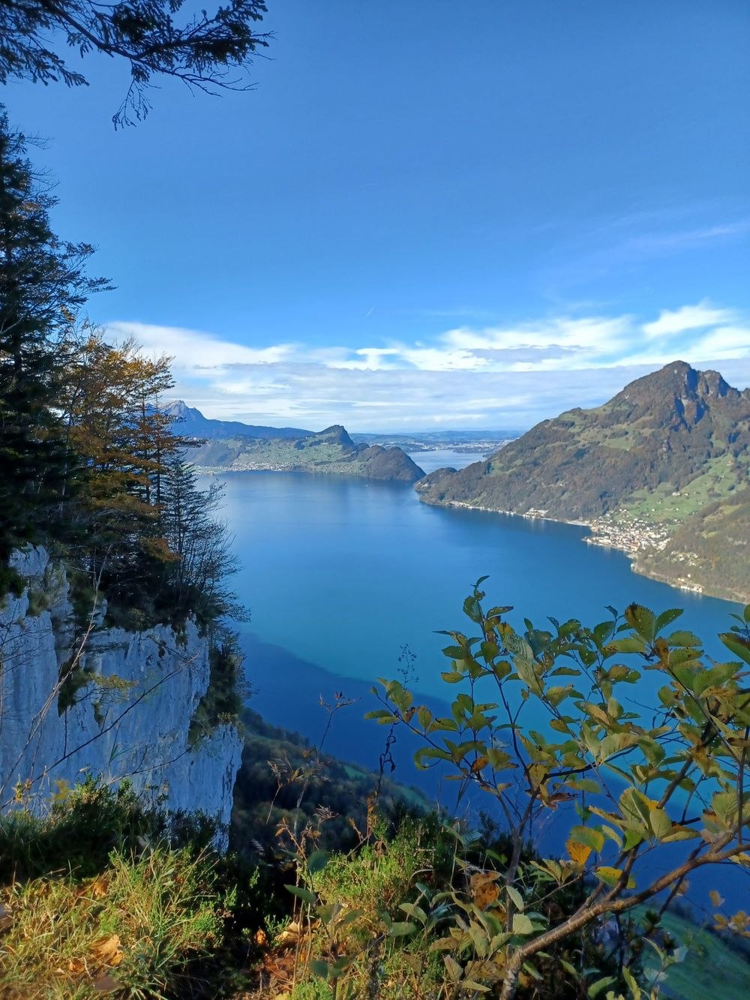
Hotel Tell · Seelisberg, Kanton Uri · direkt am Weg der Schweiz
400 Meter über dem See. Gegenüber das Rütli.
Ein Dorfhotel mit holzgetäfelten Zimmern auf der Sonnenterrasse von Seelisberg, hoch über dem Urnersee. Frühstücksbuffet im Saal, kostenloser Parkplatz am Haus, Standseilbahn und Schiff wenige Minuten entfernt.
Vom Haus hinunter zum See
- 801 mü. M.
- Hotel Tell, SeelisbergDorfterrasse rund 400 Meter über dem See
- 550 mvom Haus
- Rütliwiesewo 1291 der Bund der Eidgenossen beschworen wurde
- 8 Min.mit der Bahn
- Treib–Seelisberg-BahnBergstation 400 m vom Haus; seit 1916 hinunter zum See
- 436 mü. M.
- Schiffstation TreibKursschiffe: Brunnen 7 Minuten, Luzern rund 2 Stunden
Richtwert CHF 143Doppelzimmer für 2 Personen pro Nacht mit Frühstück · Booking.com, 27.10.2026
Drei Zimmerarten, alle mit Dusche und WC
Holzgetäfelte Wände und Decken, Flachbild-TV, kostenloses WLAN, Bergblick – so beschreibt Booking.com die Zimmer. Das Frühstücksbuffet im Saal ist inbegriffen. Preise veröffentlicht das Haus nicht; der Richtwert stammt aus dem Preisvergleich bei Google/Booking.com.
| Kategorie | Etage | Belegung | Preis pro Nacht | Auswahl |
|---|---|---|---|---|
| DoppelzimmerHell, holzgetäfelt, teils mit Balkon zur Bergwelt | 2. Etage | 1–2 Personen | CHF 143Richtwert für 2 Personen, Frühstück inbegriffen | |
| Einzelzimmer«Ein kleines Nest für Alleinreisende» | 1. und 3. Etage | 1 Person | auf Anfrage | |
| FamilienzimmerZwei Ebenen: unten Doppelbett und Bad, oben zwei Einzelbetten und Platz zum Spielen | 3. Etage | 2–4 Personen | auf Anfrage |
Richtwert: Booking.com im Google-Preisvergleich, abgerufen am 27.10.2026 für 28.–29.10.2026, 2 Erwachsene, Frühstück inbegriffen (155 € ≈ CHF 143). Einzel- und Familienzimmer: Das Haus nennt den Preis – die Anfrage läuft über dasselbe Formular.
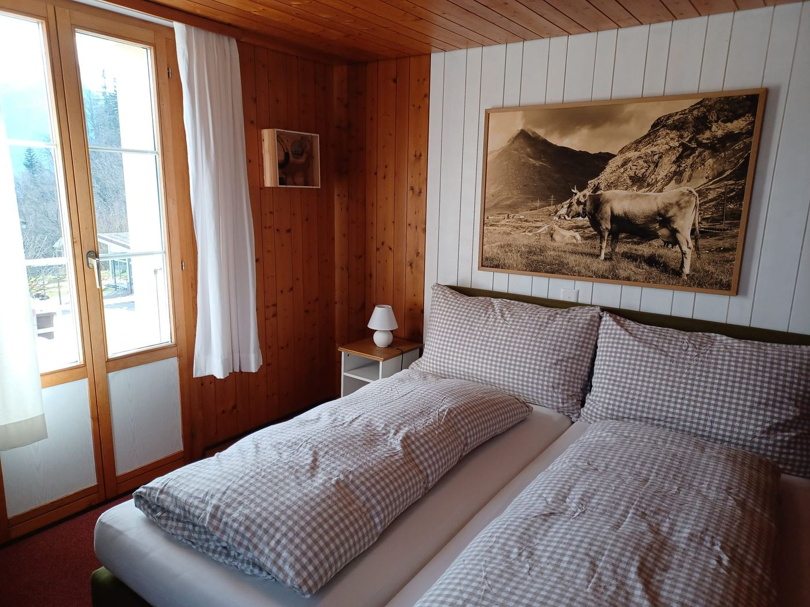
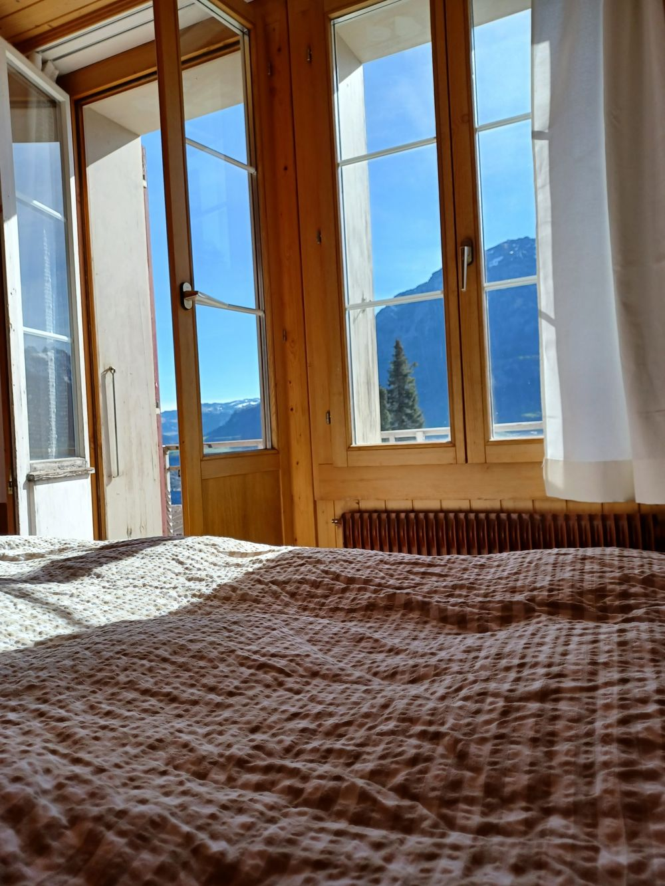
Gut zu wissen
- Check-in
- 16–18 Uhr; bitte die Ankunftszeit vorher mitteilen (Booking.com)
- Check-out
- bis 10.30 Uhr (Booking.com)
- Frühstück
- Buffet im Saal für rund 60 Gäste, inbegriffen
- Zahlung
- bar (Booking.com nennt Barzahlung als akzeptierte Zahlungsart)
- Parken
- kostenloser Privatparkplatz am Haus
- Haustiere
- nicht gestattet
- Kinder
- in jedem Alter willkommen; keine Baby- und Zustellbetten
«Die Zimmer sind mit Alpencharme und detailverliebt eingerichtet. Die Gastfreundschaft zum Frühstück und die sympathischen Gespräche mit Personal und Leitung haben uns sehr gefallen.»
Frühstück im Saal, Terrasse zur Kirche
Der Saal bietet für rund 60 Gäste Platz; hier geniessen die Hausgäste das reichhaltige Frühstücksbuffet. Vor dem Haus steht die Terrasse mit den roten Stühlen, gegenüber die Kirche St. Michael und die Mythen – der Blick, den auch die Webcam des Hotels zeigt. Das Restaurant ist derzeit geschlossen; die Zimmer mit Frühstück bleiben buchbar.
- Saal
- rund 60 Plätze, Frühstücksbuffet für Hausgäste
- Terrasse
- vor dem Haus, Blick auf die Kirche St. Michael und die Mythen
- Restaurant
- derzeit geschlossen (hoteltell.ch)
- Parkplatz
- kostenlos, direkt am Hotel
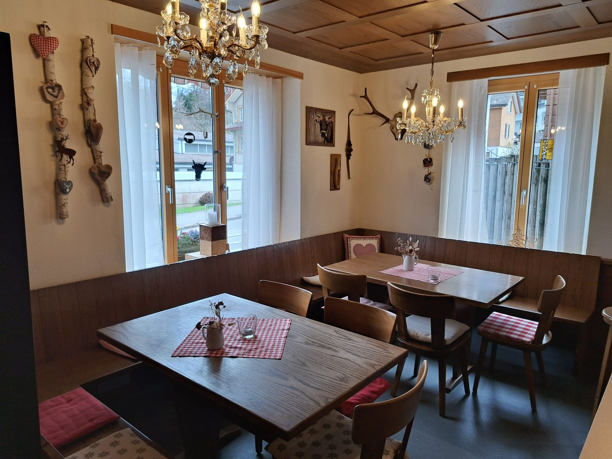
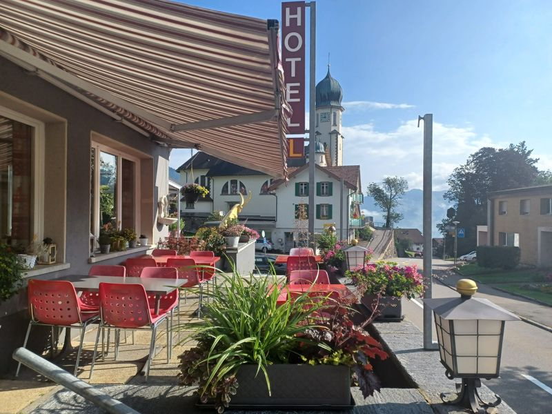
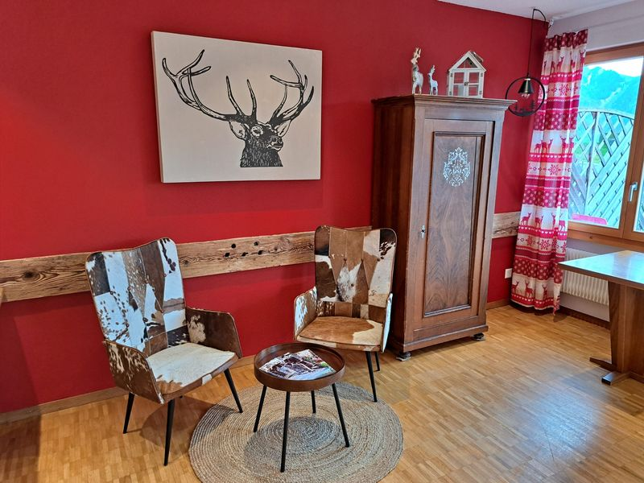
9,1von 10 · 647 Bewertungen auf Booking.com (27.10.2026) – Personal 9,8, Sauberkeit 9,5, Komfort 9,4, Lage 9,3, Preis-Leistung 9,0 · Google 4,7 Sterne
Gastgeber
Das Hotel Tell führt die Hotel Tell Seelisberg AG, eine Familiengesellschaft der Familie Breitschmid (Verwaltungsrat: Laura Breitschmid, Präsidentin, und Nora Breitschmid – Handelsregister Uri). Was Gästen zuerst auffällt, ist nicht die Struktur, sondern der Empfang: 9,8 von 10 für das Personal auf Booking.com.
«Den grössten Luxus, den wir im Hotel Tell bieten, ist passionierte Gastfreundschaft. Alles Weitere bringen der Ort und Sie mit.»
«Die Liebe zum Detail, die Gastfreundschaft – einfach alles! Ein ganz bezaubernder Aufenthalt!»
«Nettes leckeres kleines Frühstücksbuffet, wirklich geschmackvoll eingerichtetes Zimmer, kostenloser Parkplatz, unkomplizierte Anreise auch wenn grad niemand da ist, unkomplizierte freundliche Betreiber.»
«Tolle sonnige Lage und Weitblick mit ein paar Schritten zu erreichen. Alles was man braucht war vorhanden.»
Zitate von der Booking.com-Seite des Hauses, abgerufen 27.10.2026; Namen wie dort veröffentlicht.
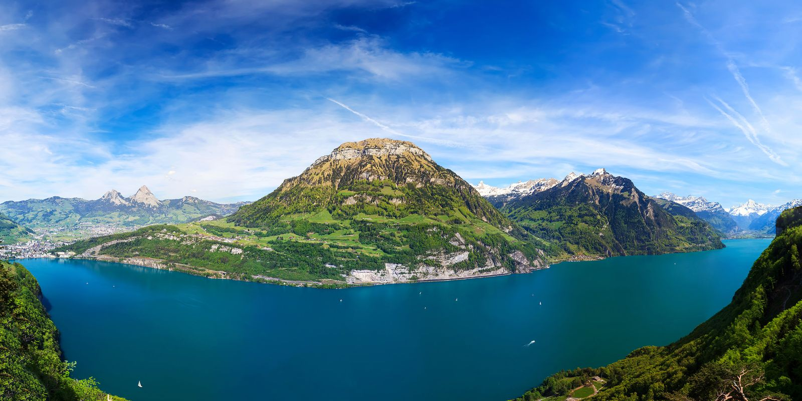
Rütli, Weg der Schweiz, Tannwald
Seelisberg ist die Heimat des Rütlis: Auf dieser Wiese wurde 1291 der Bund der Eidgenossen beschworen. Das Dorf liegt am Weg der Schweiz, der um den Urnersee führt und in Etappen erwandert werden kann; auch der Jakobsweg führt durch Seelisberg. Der Tannwald-Rundweg mit Aussicht auf den Urnersee, die Urner Bergwelt und das Reusstal ist für jedermann zu bewältigen – oder Sie kombinieren eine Wanderung mit dem Postauto (Linie 311), der Seilbahn zur Alp Weid oder der Treib–Seelisberg-Bahn.
Zu Fuss ab Haustür
- Geschichtsreise Seelisberg
- Outdoor-Geschichtsweg, frei zugänglich
- Weg der Schweiz
- um den Urnersee, in Etappen – das Haus liegt direkt daran
- Tannwald-Rundweg
- Aussicht auf Urnersee, Urner Bergwelt und Reusstal
- Jakobsweg
- führt durch Seelisberg
- Alp Weid
- Seilbahn ab Dorf
Winter
Klewenalp–Stockhütte ist das nächste Skigebiet – 5 Minuten mit dem Auto oder mit dem Postauto. Weiter entfernt: Titlis–Engelberg, Stoos–Fronalpstock, Andermatt, Melchsee-Frutt, Mythenregion. Mit dem Schneepass Zentralschweiz steht mit einem Abo alles offen.
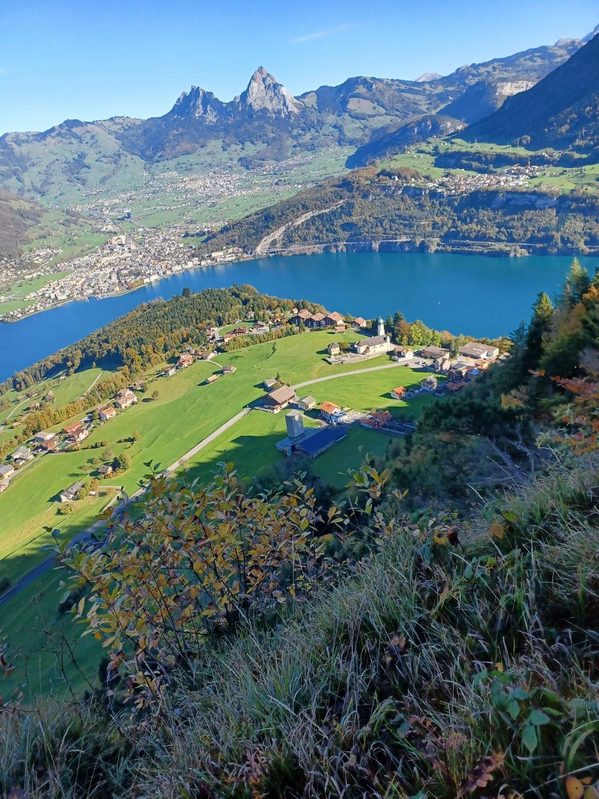
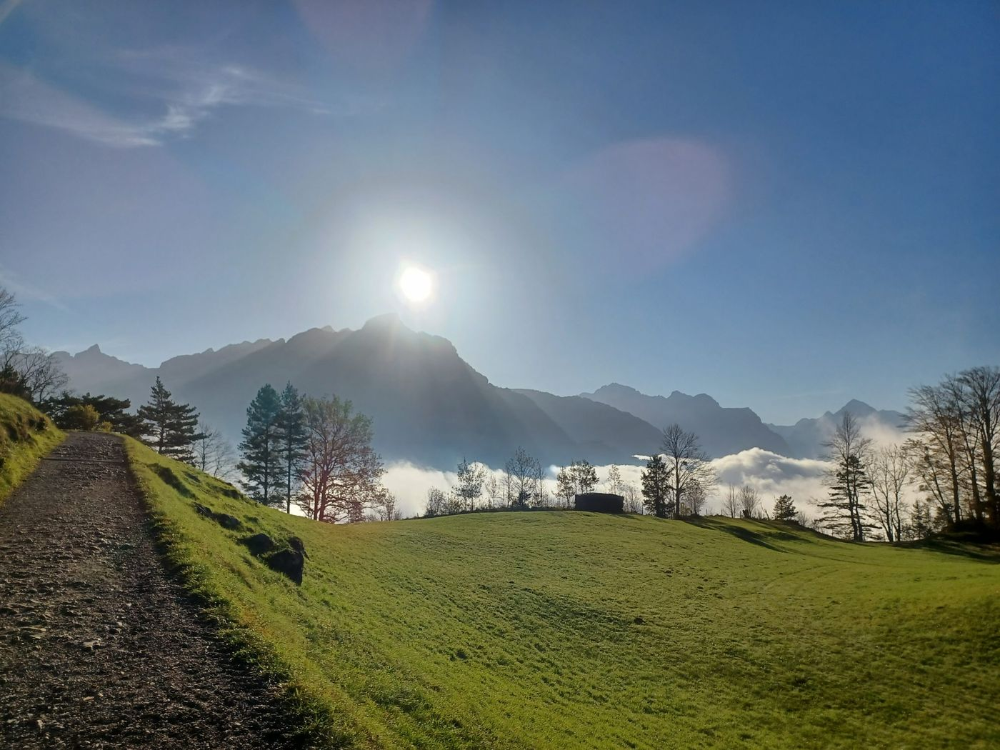
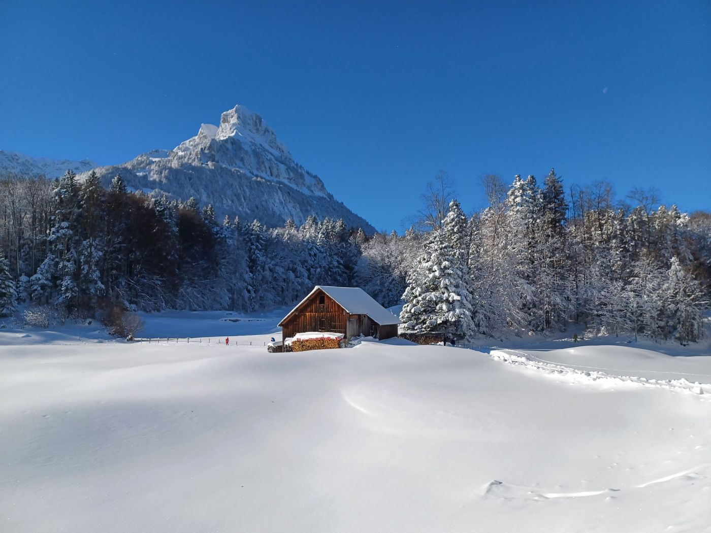
Anreise
- Adresse
- Hotel Tell · Dorfstrasse 81 · 6377 Seelisberg · Schweiz
- Mit Schiff und Standseilbahn
- Kursschiffe der SGV nach Treib: ab Brunnen 7 Minuten, ab Luzern rund 2 Stunden (19.10.–12.12.2026 mit Schiffswechsel in Beckenried). Ab Treib fährt die Standseilbahn in 8 Minuten nach Seelisberg; die Bergstation liegt 400 m vom Haus.
- Mit dem Postauto
- Linie 311 nach Seelisberg; Haltestelle in der Nähe des Hauses.
- Mit dem Auto
- Luzern 34 km; Flughafen Zürich 94 km; Emmen 39 km (Booking.com). Kostenloser Privatparkplatz am Haus.
- Check-in / Check-out
- Check-in 16–18 Uhr, Check-out bis 10.30 Uhr (Booking.com). Bitte teilen Sie dem Haus Ihre Ankunftszeit mit.
- Kontakt
- +41 41 820 12 67 · info@hoteltell.ch · Webcam
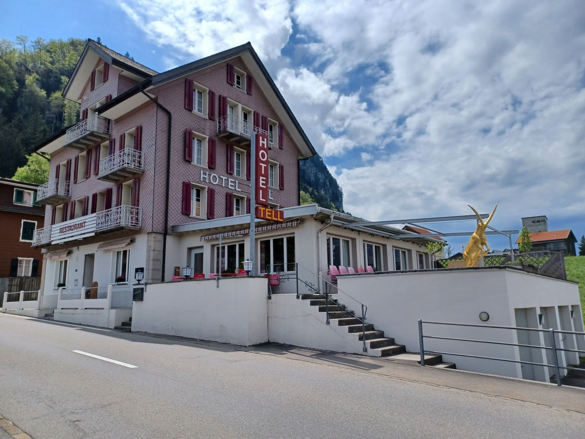